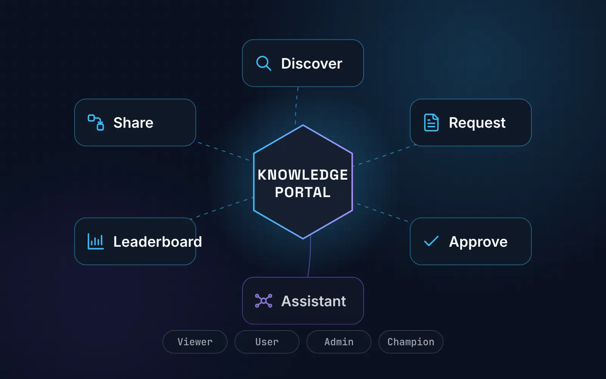

Enterprise Knowledge Portal
An enterprise knowledge platform combining discovery, knowledge requests, an AI chatbot, approval workflows and leaderboards. I owned its build, from the functional specification to implementation, incorporating business feedback.
- AI / ML
- Software Development

- My contribution
- Owned the build, from specification to implementation
- Status
- No public status
- For
- Four roles: Viewer, User, Admin, Champion
- Categories
- AI / ML · Software Development
The problem
Make organizational knowledge easier to discover and use through a shared platform with role-based access. It serves four roles: Viewer, User, Admin and Champion.
Technical approach
The portal brings six capabilities into one application: discovery and search, knowledge requests, an approval queue, an AI chatbot, leaderboards, and sharing with role-based access. People use whichever they need, in any order.
Capability map
Functional view drawn from the documented capabilities, with sample content. It is not a system architecture diagram.
Six capabilities in one platform. They aren’t steps: people use whichever they need, in any order. Select one to see what it does.
Discover and search knowledge
A knowledge repository with search, a catalogue and file discovery.
Raise knowledge requests
Users can raise a request for knowledge they need.
Review requests in an approval queue
Requests are reviewed in an approval queue. Managers and portal champions are involved in approvals.
Ask the chatbot
A dedicated AI chatbot offers a conversational way to work with the knowledge.
View leaderboards
Leaderboards are part of the portal.
The chatbot is one capability of the platform, not the whole product.
My contribution
I developed the Enterprise Knowledge Portal end to end, starting from the supplied functional specification document. I implemented the application and incorporated business feedback.
Delivery timeline
- Supplied specificationThe starting point: the functional specification document
- ImplementationThe application, developed end to end
- Business feedbackIncorporated into the application
Technologies
Stack details not yet published
Technologies are listed only once confirmed.
Results and status
The application brings these knowledge workflows into one place and has been refined through business feedback.
- Status
- No public status
- Metrics
- No published metrics
Walkthrough
It follows a sample user through discovery, a knowledge request, the approval queue, the chatbot and a leaderboard.
Read the walkthrough as text
- Discover knowledgeA sample user searches for “onboarding” and browses the catalogue to find documents.
- Raise a knowledge requestThey can also raise a knowledge request for something they need.
- Approval queueThe request appears in an approval queue. Managers and portal champions are involved in approvals.
- Ask the AI chatbotThe chatbot answers a sample question and points to where the guide is.
- LeaderboardsAn illustrative leaderboard with fictional entries.
- One platformDiscovery, requests, the chatbot, approvals and leaderboards in one platform, with sharing and role-based access.
Repository and demo
- RepositoryNot public: company project
- Live demoNot public: company project
- Illustrative walkthroughDescribed above, as text